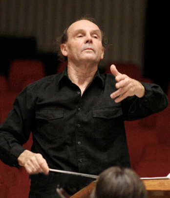
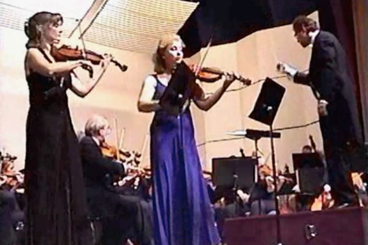

About
André Music Studio
André Music Studio is a music school created by a professional musical family to further excellence in string playing,performance, and appreciation.
David André - bass instructor
 Conductor, David André, a California native, commenced his music studies at age five receiving his baccalaureate degree from San Francisco State University and his master’s and doctorate degrees from the University of Washington. A contrabassist with the Seattle Symphony, he also served as principal of that section in the San Jose Symphony, chairman of the Cabrillo College music department, and assistant conductor for the internationally acclaimed Cabrillo Music Festival. A finalist in the Georg Solti Conducting Competition in 1972, he then became music director for the symphonies of Everett, Maui & Port Angeles, which he toured through China in 1985. He became music director of the Tulare County Symphony in 1985, and in 1992 was designated “An American Cultural Specialist” by the U.S. State Department.
Since that time André has been guest conducting many of the major symphony orchestras of the world every year, including those in Moscow, Vienna, St. Petersburg, Prague, Kazan, Budapest, Kiev, Minsk, Sofia, and many others. Much of his guest appearances have also found him in Central America, Mexico, Canada, and of course, the United States. He has served as chief conductor for the Alicanti Music Festival in Spain and the Arcady Music Festival in Maine, was engaged by the U.S. State Department to conduct the National Symphony of the Ukraine for the 10th anniversary celebration of U.S. diplomatic relations with the former Soviet States, and was invited by the Russian Ministry of Culture to be the first American to conduct the Russian National Folk Orchestra. A fine, gifted conductor, David André is committed to programming music that motivates every orchestra with whom he has worked. He is also dedicated to providing the entertaining element in his programs that gratifies the audience. His conducting is instilled with extraordinary care and insightful comprehension. The mark of a true music conductor is to inspire the individual players to exceed their own personal goals and to band them together in meeting the collective challenge. David André has shown repeatedly that orchestras under his masterful direction do realize their very best.
Galina André - viola, violin instructor
 Born in Volgograd, Russia, Galina André graduated from music school as a young child and subsequently received her diploma from the music college of Volgograd and her masters's degree in viola from the Rachmaninoff Conservatory. For the following eight years she performed with the Volgograd Chamber orchestra, principal, the Volgograd Opera Theatre, co-principal, and the State Philharmonic Symphony Orchestra of Volgograd. In 1997 she married American conductor David André and moved to the United States, where she performed as a violist with the symphonies of Monterey, Fresno, and Tulare County. She has maintained a studio of violin and viola for the past fifteen years, and her students have received national and state awards, performing in state and national honor ensembles. Having created and developed a vibrant string program for St. Paul's School, she recently began developing a similar program at St Frances Cabrini School. In addition, she teaches privately in the André music studios in Cupertino and San Jose.